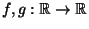
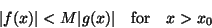
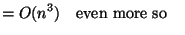
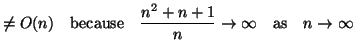

Now, in the above formula the last two terms are quite small compared to the first, particularly if n is large.
For n = 10 it gives T(10) = 245.6 + 10.69 + 2.14
For n = 100 it gives T(100) = 24560 + 17.92 + 7.14
We would like to be able to say that T(n) behaves essentially like n2 (modulo a proportionality factor). This is much easier to understand and is essentially true.
I now want to introduce a notation that goes some way towards making this idea precise.
Let  be functions. We say that f = O(g) if there are x0, M > 0 such that

i.e. there is some fixed multiple of g that eventually dominates f. Another way to say this is that f (x)/g(x) is eventually bounded.For example
| n2 + n + 1 | = O(n2) since, for n > 1, 3n2 > n2 + n + 1 | |
|  | ||
|  |
Similarly,
n3 - 4n2 + n = O(n3) and
 O(n2).
O(n2).
Note that n2 + n + 1 = O(n100) is true, but not very helpful. We usually try to make Big-O statements as `limiting' as possible.
A standard kind of statement in this subject is: Algorithm A has T(n) = O(n2) and algorithm B has T(n) = O(n3). So A is the faster algorithm. Be careful! This is usually correct, but could in some cases be misleading. To take a very silly example: if f (n) = 1010n2 and g(n) = 10-10n3 then f = O(n2) and g = O(n3) but f (n) > g(n) so long as n < 1020. In real life the proportionality factors are rarely that different, so Big-O statements are usually fairly safe for reasonably large values of n.